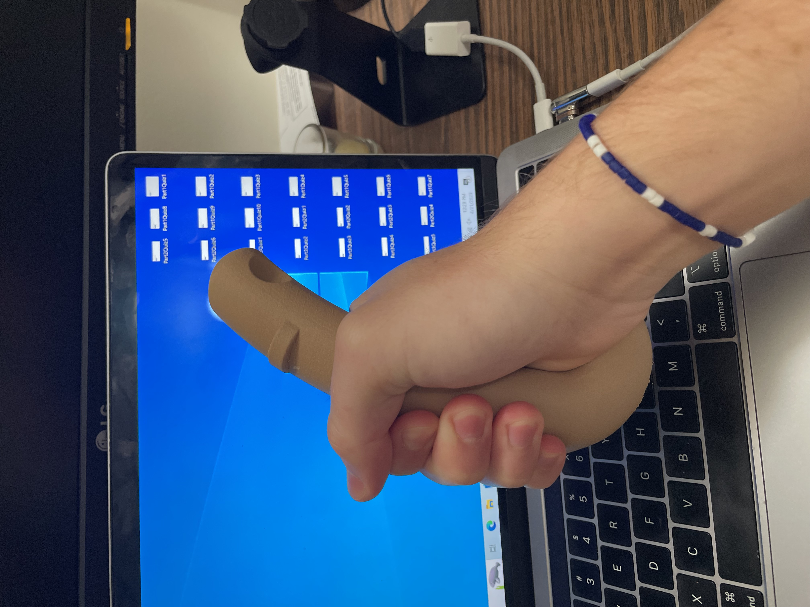
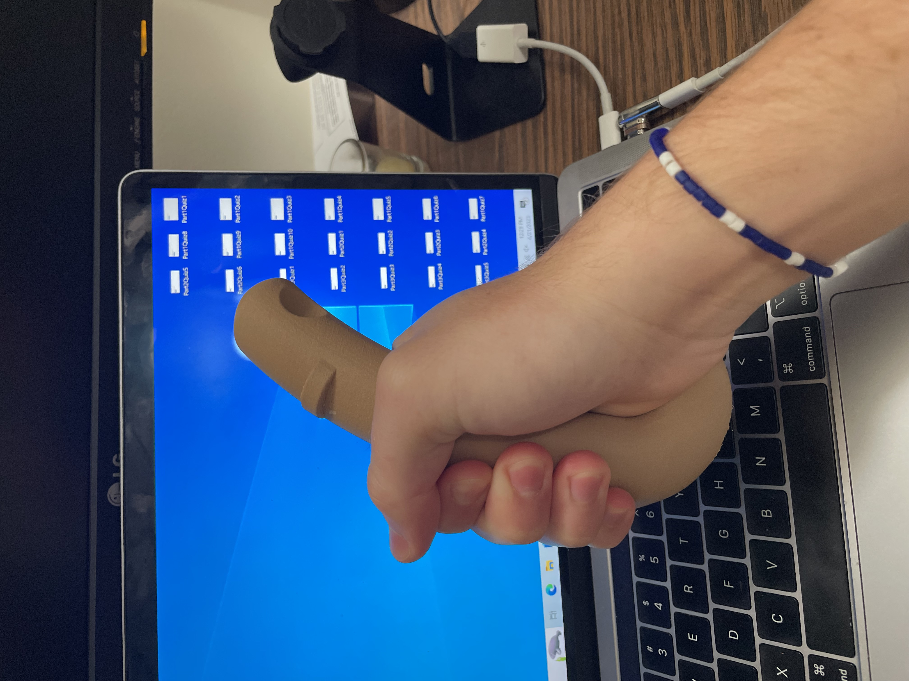
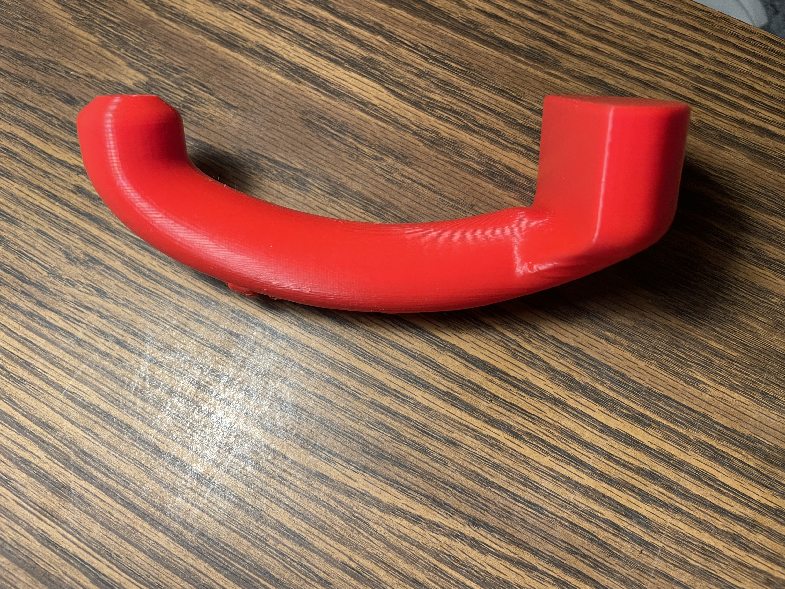
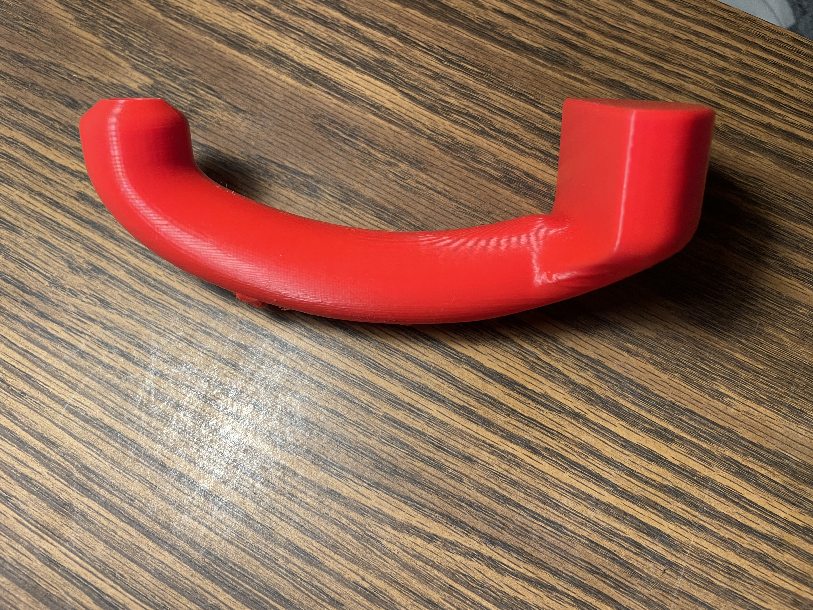

Ultrasound Transducer
This was a class project for an industrial design class focused on designing for human factors. Teams were given an occupation that had far higher than average cases of work-related musculoskeletal disorders (WRMSDs) and were tasked with changing one or more aspects of that occupation to minimize the risk. My team was assigned to re-design the medical ultrasound process, and we decided to change the shape of the transducer to be more ergonomic. This change would not only help minimize hand and wrist injuries, but the improved shape would affect posture and help the entire body of a monographer avoid repetitive use injuries.
 

 

Background
The prevalence of work-related musculoskeletal disorders in medical ultrasound professionals
is a significant issue, impacting their health, productivity, diagnostic quality, and healthcare
sustainability. WRMSDs, such as carpal tunnel syndrome, tendinitis, and back pain, affect up to
90% of ultrasound professionals due to factors like high workloads and inadequate equipment design,
necessitating urgent ergonomic improvements. Addressing these challenges can enhance their
well-being, reduce healthcare costs, and improve patient satisfaction. Research indicates that most
ultrasound professionals experience WRMSD symptoms due to factors like heavy workloads and poor
equipment design, emphasizing the need for better ergonomics to prevent pain and injuries. WRMSDs
decrease work quality and productivity, resulting in absenteeism, turnover, and increased treatment
costs. Ergonomic solutions can improve professionals' health, patient satisfaction, and healthcare
sustainability. Ergonomically designed equipment improves image quality and diagnostic accuracy,
enhancing patient care and overall healthcare quality.
Medical ultrasound involves emitting high-frequency sound waves into the body, with echoes used
to create images. It's vital for diagnosing conditions, including pelvic, abdominal, obstetric,
brain, hip, and heart evaluations, as well as guiding biopsies without using radiation. Our team
focused on pregnancy ultrasounds to address specific pain points. The process involves preparing
the transducer, applying the gel, positioning it on the skin, transmitting ultrasound waves,
receiving echoes, processing information, interpreting results, and reporting to healthcare
providers. Ultrasound information flows from the transducer to real-time monitor images, assessing
organs, tissues, blood flow, and fetuses during pregnancy. Feedback can come from patients directly
or through physicians. Ultrasound tasks are performed in healthcare settings, usually dimly lit
rooms, respecting patients' privacy. Exam rooms are often small, limiting ergonomic positioning,
and portable exams may require awkward movements. Historically, ultrasound technology focused on
imaging capabilities. Recent developments include cordless transducers, adjustable monitors, and
ergonomic chairs, but ergonomic education remains inadequate.
Design
Before beginning the design process, I contacted over 20 sonographers of varying demographics and experience to learn about what problems were being experienced in the real world. From this research, I not only learned the specific injuries, most uncomfortable procedures, and largest desires for change of these monographers, but I also learned how widespread this issue truly was and how desperate these people were for any innovation. With this in mind, my team set our parameters for design to include eye height, reach, hand size, pinch grip capacity, and cylindrical power grip capacity. With the exception of eye height, we planned to accommodate the 95th percentile male and 5th percentile female, and we found our target values through available anthropometric data. We researched existing solutions, which above all were impractical for the majority of monographers due to cost. Our team began brainstorming solutions and came up with several changes that would make a direct impact in minimizing WRMSDs. For the sake of the project, we elected to pursue a redesign of ultrasound transducers. We drew potential redesigns, discussing and iterating until we had a final idea. I then used Fusion 360 to CAD the design, continuing to iterate along the way. Our new design had a curved handle that would transition the current pinch grip into a power grip, reducing the force on fingers and wrists. The new design also changed how force was applied, improving elbow, shoulder, and back posture.
Prototyping
To prototype the new design, I used FDM 3D printing. For this project, feel was a very important aspect. Because of this, I made a variety of changes to the CAD after I had a prototype in my hands. I changed the location of the control buttons and dial to ensure they were comfortable to use and also fit with the anthropometric data. The design was also adjusted for the ulnar side of the palm to be able to lay flat on the transducer. In the end, I had a transducer that was far more comfortable to hold than existing models, and based on movement diagrams would minimize WRMSDs.
Reflection
My favorite part of this project was connecting with industry professionals who were experiencing the problems we were attempting to solve. I enjoyed learning from those who had first-hand experience, versus going strictly off of internet information. This made the project feel more personal and made me want to perform and design better. I also liked gaining practice with combining functional and aesthetic design. Overall, while this project might not have been too mechanically challenging to design, it was a great introduction to industrial design.